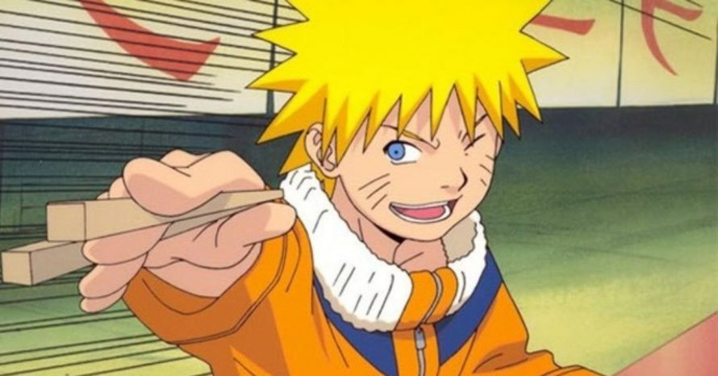
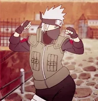

Manual do Naruto
Seja bem vindo ao Manual do Ninja Naruto! Antes de mais nada, quero dizer que é um prazer
te ter aqui conosco! Fico feliz por você ter saído nessa jornada, em busca de conhecimento
e diversão.
Espero que você encontre o que procura!

O Manual do Naruto conta com 10 páginas que te oferecem diferentes formas de aprendizado.
Nosso site possui uma vasta gama de recursos baseados no anime Naruto(acho que já deu pra
perceber, né?).
Aqui você encontrará resumos sobre o anime, conhecerá os personagens e poderá sentir um gostinho de como esse anime é espetacular. Além de textos didáticos sobre inspiração e persistência, você também encontrará jogos de altissíma qualidade que foram criados para o seu entretenimento, e eu espero muito que eles te proporcionem um momento divertido e prazeroso!

Sumário
A Origem - Descubra como o artista Masashi Kishimoto criou as primeiras páginas do anime, de onde surgiu a ideia inicial, quais foram as suas inspirações, como foi o processo e criação e como Dragon Ball influenciou essa obra de arte.
Clássico - Encontre tudo o que você precisa saber para ser instigado a assistir (ou rever) esse super anime! Na plataforma Clássico você também poderá conhecer melhor os personagens. E sabe aquela dúvida comum que todos tem sobre a forma com que os ninjas correm? Pois é! Aqui você achará a formúla nada mágica para esse problema.
Shippuden- Aprenda tudo sobre a melhor parte do anime (na minha opinião), conhecendo as novas histórias que vêm em seguida do Clássico! Neste momento Naruto está crescido, não só ele, mas todos os seus amigos. Novas jornadas os esperam, novos jutsus e missões incríveis! Você não vai perder, né?
Autor - Nessa aba você confere a vida de Masashi Kishimoto, além de muitas curiosidades de sua jornada como mangaká!
Trilha Sonora - Nesta página você poderá navegar pelas músicas mais tocadas durante a temporada Clássico e Shippuden! As páginas ainda possuem músicas leves que te adentrará no mundo de Konoha.
Curiosidades - Há! Chega de aprender lendo textos de forma estática! Aqui você jogará um jogo de verdadeiro ou falso e, o melhor! Poderá conferir as respostas corretas, errando ou acertando. Não se esqueça de colocar quantas você acertou.
Moral - Aqui você vai conhecer um dos motivos que fazem com que muitas pessoas assistam e amem o anime. Ele não é somente fonte de diversão, como também de aprendizadoe e emoção. Não perca!
Shopping do Naruto - Se você estava procurando por produtos relacionados ao anime, chegou ao lugar certo! Aqui você navegará por roupas casuais à decorações de festas! Aproveite as promoções!
Quiz - Bem, você chegou onde eu queria. Você foi desafiado a jogar este quiz e não há desculpas quanto ao conteúdo pois você ja sabe, ou não... Eu te espero neste jogo de perguntas e respostas. Ah! Não se esqueça de conferir quantos pontos você marcou ao final do game.
E aí! Tá esperando o que? Agora que já conhece nosso site, está apto para embarcar nesta jornada. Te desejo boa sorte e um grande abraço!
Feito por: Maria Victória Magalhães de Miranda.